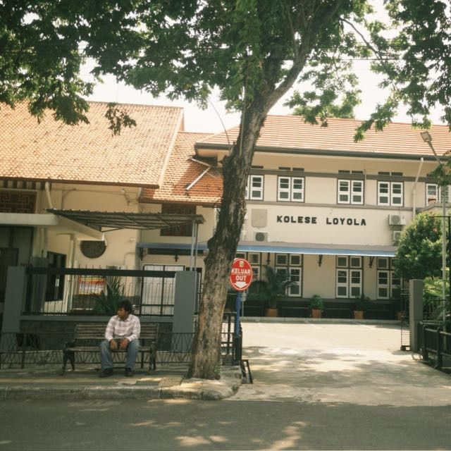

Mata Pelajaran TIK

Siswa Kolese Kanisius Jakarta
Kelas: XIS7
Sekolah: Kolese Kanisius
Hobi: Design, Main game
Cita-cita: Designer baju
Saya merupakan siswa kolese kanisius yang duduk dibangku kelas 11-S7. Saya memiliki ketertarikan dalam bidang Design seperti design baju dan juga edit tipis-tipis. Saya bercita-cita untuk menjadi seorang designer baju yang menjual usaha baju dan saya sedang mulai merintis usaha kecil-kecilan yang ada di Kolese Kanisius. Selama pembelajaran TIK bersama Pak Gesit, saya bisa mengikuti pembelajaran dengan baik dan bisa melakukan prakteknya dengan baik juga. Melalui pembelajaran tersebut saya bisa membuat beberapa website yang dijadikan sebagai tugas.
| No | Materi | Nilai |
|---|---|---|
| 1 | Sosiologi | 90 |
| 2 | Sejarah wajib | 95 |
| 3 | Matematika | 100 |
| 4 | Bahasa inggris | 95 |
| 5 | Mini Project Website | 97 |